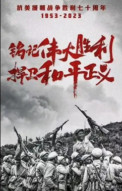
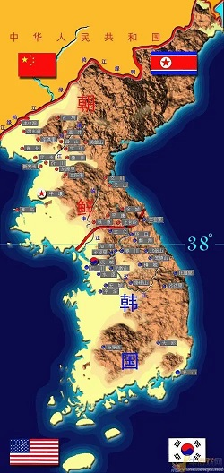
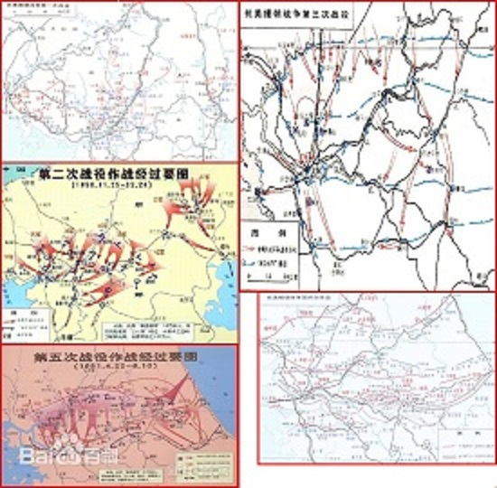
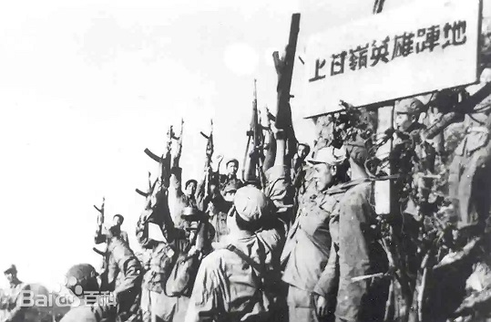
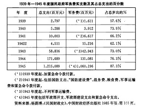
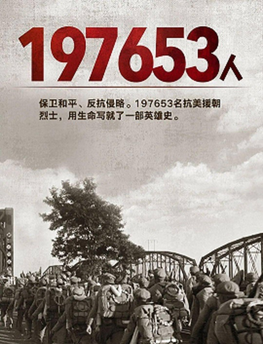
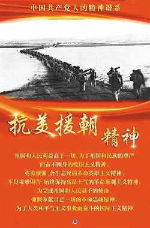

抗美援朝，又称抗美援朝运动或抗美援朝战争，是20世纪50年代初爆发的朝鲜战争的一部分，仅指中国人民志愿军参战的阶段，也包括中国人民支援朝鲜人民抗击美国侵略的群众性运动。 
1950年7月10日，“中国人民反对美国侵略台湾朝鲜运动委员会”成立，抗美援朝运动自此开始。10月，中国人民志愿军赴朝作战，拉开了抗美援朝战争的序幕。在抗美援朝战争中，志愿军得到了解放军全军和中国全国人民的全力支持，得到了以苏联为首的社会主义阵营的配合。1953年7月，双方签订《朝鲜停战协定》，从此抗美援朝胜利结束。1958年，志愿军全部撤回中国。10月25日为抗美援朝纪念日。
2020年7月2日报道，2020年是中国人民志愿军抗美援朝出国作战70周年，将以中共中央、国务院、中央军委名义颁发“中国人民志愿军抗美援朝出国作战70周年”纪念章。
抗美援朝战争锻造形成的伟大抗美援朝精神，是弥足珍贵的精神财富。2020年10月19日，习近平强调：在新时代继承和弘扬伟大抗美援朝精神 为实现中华民族伟大复兴而奋斗。 2021年9月，“抗美援朝精神”被列入党中央批准中央宣传部梳理的第一批中国共产党人精神谱系的伟大精神。

朝鲜半岛的分裂
朝鲜人民军的南进与美国的干涉
美军越过三八线、威胁中国安全
1945年8月8日，根据雅尔塔协定，苏联对日宣战。13日，苏军开始在朝鲜东部清津地区登陆，15日，日本无条件投降。为划分对日本占领地区受降范围，经苏、美协商，在朝鲜，以北纬三十八度线（以下简称三八线）为界，以北为苏军受降区，以南为美军受降区。 根据开罗宣言精神，1945年12月27日，苏、美、英三国外长莫斯科会议达成协议，由驻朝鲜的苏军司令部和美军司令部组成联合委员会，协助南、北朝鲜迅速建立一个统一的临时政府，但是由于苏、美双方在一些重大问题上意见分歧而未能实现。
1948年8月15日，在朝鲜半岛南部大韩民国成立，9月9日，北部朝鲜民主主义人民共和国宣告成立。在朝鲜半岛上出现了两个不同性质的政权，形成南北分裂、对立的局面。围绕朝鲜统一问题，双方之间的斗争日益尖锐化，三八线上武装冲突日增，局势日趋紧张。
1948年10月，苏联把朝鲜半岛北半部的行政权移交给朝鲜政府，同年12月25日，苏军全部撤离朝鲜。 至此，朝鲜南北正式分裂。但双方都不放弃统一目标，三八线附近时有摩擦，终于导致1950年6月25日朝鲜战争爆发。
第一次战役抗美援朝战争第一次战役是中国人民志愿军于1950年10月25日至11月5日，在朝鲜人民军配合下，在朝中边境及其附近地区，对美国为首的“联合国军”及其指挥的韩国国军突然发起的进攻战役。10月25日，志愿军发起战役，以1个军的主力配合朝鲜人民军在东线进行阻击，集中5个军另1个师于西线给“联合国军”以突然性打击，将其从鸭绿江边驱逐到清川江以南，挫败了“联合国军”企图在感恩节（11月23日）前占领全朝鲜的计划，初步稳定了朝鲜战局。第一次战役志愿军共歼敌15000多人。
第二次战役抗美援朝战争第二次战役是中国人民志愿军于1950年11月7日至12月24日，在朝鲜人民军配合下，将美国为首的“联合国军”及其指挥的韩国国军诱至预定战场后，对其突然发起反击的战役，是扭转朝鲜战局的一次战役。西线六个军主力在清川江地区。东线3个军师在长津湖地区发起反击，给以出其不意的打击。“联合国军”兵败于西部战线的清川江两岸和东部战线的长津湖畔，放弃平壤、元山，退至“三八线”以南。“联合国军”虽然已经发觉志愿军入朝参战，但却估计志愿军参战只不过是为保卫边界。11月24日，“联合国军”发起旨在圣诞节结束朝鲜战争的总攻势。志愿军按预定计划，将“联合国军”诱至预定地区后，立即发起反击，给以出其不意的打击。“联合国军”兵败于西部战线的清川江两岸和东部战线的长津湖畔，被迫弃平壤、元山，分从陆路、海路退至“三八线”以南。第二次战役志愿军共歼敌36000多人。
第三次战役抗美援朝五次战役形势图抗美援朝战争第三次战役是中国人民志愿军和朝鲜人民军于1950年12月31日至1951年1月8日，为打破美国政府“先停火，后谈判”，争取喘息时间，卷土重来的阴谋，突破“三八线”，对美国为首的“联合国军”及其指挥的韩国国军进行的进攻战役。志愿军集中6个军，在人民军3个军团协同下，对依托“三八线”既设阵地进行防御的“联合国军”发起全线进攻，将其从“三八线”击退至北纬37°线附近地区，占领韩国首都汉城（今首尔），并适时停止了战役追击。第三次战役共歼敌19000多人
第四次战役抗美援朝战争第四次战役是1951年1月25日至4月21日，中国人民志愿军和朝鲜人民军为制止美国为首的“联合国军”及其指挥的韩国国军发动的攻势，争取时间掩护后续兵团到达，进行反击准备，在“三八线”南北地区进行的防御战役。志愿军连续取得三次战役胜利后，主力转入休整。“联合国军”发现志愿军补给困难、第一线兵力不足，便迅速补充人员、物资，调整部署，于1951年1月25日恢复攻势。志愿军立即由休整转入防御，与朝鲜人民军一起，展开第四次战役。第一阶段以一部兵力在西部战线顽强抗击，集中6个军在东部战线横城地区实施反击，但未能打破“联合国军”主要方向上的进攻。第二阶段，为了以空间换取时间，掩护后续兵团到达，遂在全线转入运动防御，抗击消耗“联合国军”。3月14日，中朝人民军队撤出汉城。麦克阿瑟同杜鲁门在侵朝政策上发生严重分歧，杜鲁门于4月11日撤销麦克阿瑟的职务，任命李奇微为“联合国军”总司令。4月21日，将“联合国军”扼制在“三八线”南北附近地区。第四次战役志愿军虽有较大损失，但仍歼敌7.8万多人。
第五次战役抗美援朝战争第五次战役于1951年4月22日发起，至6月10日前后结束，历时50天，战役的结果是志愿军和人民军将“联合国军”从三八线附近地区打退到汉江南岸地区，但又被“联合国军”推回到三八线南北地区，志愿军和人民军共歼灭“联合国军”8.2万余人，自身作战减员8.5万余人。 [47]志愿军由于第19、第3兵团的到达和原在元山地区休整的第9兵团重返前线，兵力已居优势。根据毛泽东提出的“战争准备长期，尽量争取短期”的指导方针，歼灭其有生力量，夺回战场主动权。发起第五次战役。首先集中志愿军11个军和人民军1个军团于西线实施主要突击，再次越过“三八线”，直逼汉城；接着，志愿军又转移兵力于东线，后，中朝人民军队向北转移，至6月10日，战线稳定在“三八线”南北地区。第五次战役志愿军共歼敌8万多人。志愿军某炮兵指挥部经过7个多月的军事较量，美国政府已认识到如将主要力量长期陷于朝鲜战场，则对其以欧洲为重点的全球战略极为不利；加上国内外反战情绪日益高涨，因此，决定转入战略防御，准备以实力为基础，同中朝方面举行谈判，谋求“光荣的停战”。6月初，美国政府通过外交途径向中朝方面作出了通过停战谈判结束敌对行动的表示。中朝方面，经过五次战役，也深感在技术装备上，中朝人民军队仍处于劣势。在现有武器装备条件下，要想在短时间内歼灭敌人的重兵集团是困难的。鉴于美国已表示愿意谈判，于1951年6月中旬，提出“充分准备持久作战和争取和谈达到结束战争”的战争指导思想和在军事上采取“持久作战、积极防御”的战略方针，据此，适时进行战略转变，由运动战为主转变为阵地战为主，由军事斗争为主转变为军事、政治（外交）斗争“双管齐下”。在作战指导上，还提出了“零敲牛皮糖”，由打小歼灭战逐步过渡到打大歼灭战的方针。
国内经济朝鲜战争开始之前，中国曾计划用3年—5年时间恢复生产，将军费从1950年占预算支出的43%减少到1951年的占预算支出的30%，以全部预算的70%投入经济建设、文化、教育、卫生事业和改善人民的生活。 抗美援朝战争开始以后，1950年11月15日，中财委在北京召开第二次全国财政会议，经中央同意，确定战争期间财政经济的工作方针是国防第一，稳定市场第二，其他第三。朝鲜停战谈判开始后，国内经济建设准备工作得到进一步的突出和加强，1952年明确了“边抗、边稳、边建” 的方针。 [14]1950年国防费用占国家财政支出的比例达到41.1%，次年增至43.0%，为建国后的最高峰。直至1952年，经济建设费才略微超过了国防费。至1952年，全国工农业总产值达827.2亿元，比1949年增长77.5%，钢产量135万吨，居世界第18位，粮食产量3088亿斤，居世界第一位。 [14-15]抗美援朝对于中国恢复国民经济和开展各项建设事业直接起到了保障的作用。为中国争取到了相当长时期的和平建设的环境。
1950年8月26日，周恩来在检查东北边防军工作的国防会议上强调，各军兵种都要有深刻的战争思想，并立即着手拟定三年建设计划。人民解放军各军兵种随即确定了自身的发展规划，开始大规模扩编或改装部队。海军于10月下旬形成了三年发展规划。部队合同作战能力大幅提高，战略战术更加丰富，抗美援朝战争期间，通过轮番作战和轮换作战，人民解放军先后赴朝鲜参战的部队共有：步兵27个军又1个师、空军12个师、野战炮兵10个师又18个团、高射炮兵5个师又13个团和50多个独立营、坦克3个师9个团、工兵15个团、铁道兵10个师，以及大量担负后勤保障任务的后勤分部、兵站、医院、汽车团、辎重运输担架团、警卫团等部队和担负后方剿匪、警卫、押运、装卸与防空任务的公安部队。到抗美援朝战争停战时，先后参战的志愿军部队已经达290多万人。 [22]至1953年8月，经受过抗美援朝战争锻炼的部队占全军部队的比例，步兵为70%以上，空军为41%，炮兵为73%，装甲兵30%以上，高射炮兵为60%以上，工兵为57%，铁道兵为100%，公安部队为11.7%。
对台关系根据华东军区颁发的训练大纲：1950年7月至1951年3月，各军兵种部队分别训练；1951年4月至5月，进行陆海空协同登陆进攻合练，然后三军协同解放台湾。朝鲜在加紧进攻南方的战役准备，莫斯科减缓和压缩了对中国的军事援助，转而支持朝鲜。美国迅速作出反应。6月27日杜鲁门抛出了“台湾地位未定”论，美国海军第七舰队借机进驻台湾海峡。此举表明，美国的对华政策已经出现了根本转变
“抗美援朝精神"
抗美援朝战争锻造形成的伟大抗美援朝精神，是弥足珍贵的精神财富，必将激励中国人民和中华民族克服一切艰难险阻、战胜一切强大敌人。要深入学习宣传中国人民志愿军的英雄事迹和革命精神。
中国共产党领导抗美援朝战争的光辉历程和宝贵经验，生动反映伟大的抗美援朝精神的丰富内涵和时代价值，重点展示志愿军将士的英雄气概和不畏强敌、制胜强敌的精神优势，展现全国各族人民同仇敌忾、万众一心的爱国情怀，彰显中华民族不畏强暴、维护和平的坚定决心。
2020年10月19日，习近平强调：在新时代继承和弘扬伟大抗美援朝精神 为实现中华民族伟大复兴而奋斗。 [35]2021年9月，党中央批准了中央宣传部梳理的第一批纳入中国共产党人精神谱系的伟大精神。“抗美援朝精神”被列入中国共产党人精神谱系的伟大精神。 [36]
